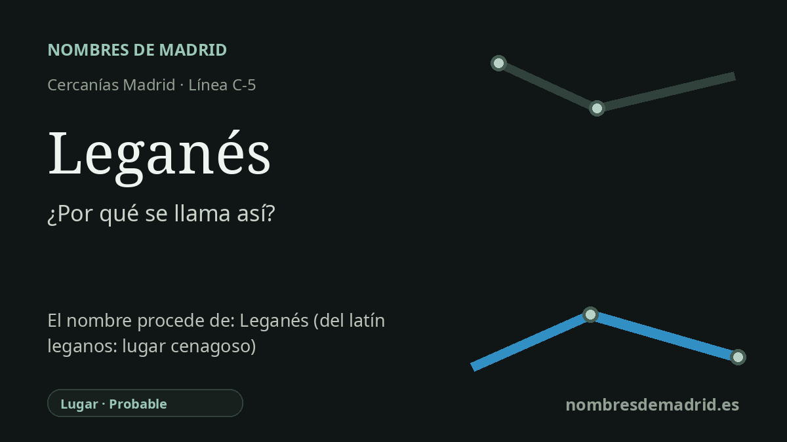

Publicado el · Investigación de Nombres de Madrid · Cómo verificamos cada origen · 7 fuentes consultadas
Respuesta rápida
La estación de Leganés toma su nombre del municipio al que sirve. El topónimo se explica tradicionalmente por una laguna con mucho légamo o lodo, aunque la toponimia actual lo considera una tradición plausible, no una etimología cerrada.
La historia del nombre
La estación de Cercanías llamada Leganés toma su nombre directamente del municipio en el que se encuentra. Adif identifica la estación como Leganés, código 35001, en la línea comercial C5, y el Consorcio Regional de Transportes de Madrid la recoge como estación de Cercanías con correspondencia con la línea 12 de Metro y autobuses.
Detrás del nombre ferroviario está una de las tradiciones etimológicas más conocidas del sur de Madrid. En las Relaciones Topográficas del siglo XVI, quienes respondieron por Leganés explicaron que el lugar se había fundado donde había una laguna en la que se hacía mucho légano, voz relacionada con légamo, es decir, barro pegajoso, cieno o parte arcillosa de las tierras de labor. Según ese relato, el nombre anterior habría sido Leganar o Legamar y después habría pasado a Leganés por cambio fonético.
La historia general encaja con un paisaje de agua, campos y antiguos asentamientos cercanos. La página histórica municipal sitúa el poblamiento medieval hacia 1280, cuando vecinos de Butarque y de otros lugares próximos se trasladaron a un emplazamiento más alto, limpio y aireado, con agua cercana. También describe el territorio como vinculado a arroyos, aldeas antiguas, labores agrícolas y la posterior identidad hortelana que hizo famoso a Leganés.
Para la estación, por tanto, el nombre no es una dedicatoria personal, sino un topónimo incorporado al sistema ferroviario. La parada actual está en el centro urbano, en la calle Virgen del Camino, y hoy funciona como estación de la C-5 e intercambiador. El nombre convive además con la denominación del Metro: la estación conectada suele tratarse como Leganés Central, mientras que Cercanías conserva el nombre municipal simple.
La interpretación mejor respaldada es que Leganés está tradicionalmente relacionado con el barro o légamo de una antigua laguna, no que proceda de manera definitiva de una palabra latina 'leganos'. Toponomasticon Hispaniae califica el topónimo como difícil y señala que la explicación local del siglo XVI es valiosa, pero no concluyente. También plantea posibilidades competidoras, en especial una conexión con lebanés, natural de Liébana, o más remotamente con el antropónimo latino Libanius.